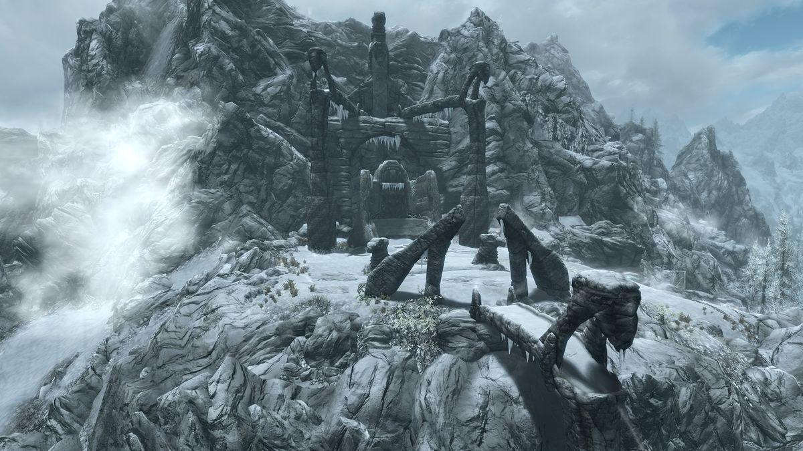

The Elder Scrolls V:Skyrim
A Brief History
The Elder Scrolls V: Skyrim was created by Bethesda Game Studios and published by Bethesda Softworks. This installment is the fifth in The Elder Scrolls series, succeeding The Elder Scrolls IV: Oblivion which was released in 2006. The game was made available worldwide on November 11, 2011, for Microsoft Windows, PlayStation 3, and Xbox 360 platforms.
Set two centuries after the events of Oblivion, Skyrim unfolds in the eponymous province located in the northern region of Tamriel, a continent within the world of Nirn. The central narrative revolves around the player's character, known as the Dragonborn, who embarks on a mission to vanquish Alduin the World-Eater, a dragon prophesied to bring about the end of the world. Throughout the gameplay, players engage in various quests to enhance their character's abilities and skills. The game maintains the hallmark open-world feature of its predecessors, granting players the freedom to explore the vast game world at their own pace, with the option to diverge from the main storyline indefinitely.
Developed using the Creation Engine, specifically tailored for this project, Skyrim offers a more diverse and distinctive open world compared to Oblivion's Imperial Province of Cyrodiil. Todd Howard, the game director and executive producer, aimed to create a world that was more captivating and engaging. Following its release, Skyrim garnered widespread critical acclaim, lauded for its character progression system, immersive world design, stunning visuals, and dynamic combat mechanics. While the game received some criticism for its melee combat mechanics, dragon encounters, and technical glitches during its initial launch, it quickly became a commercial success, selling millions of copies within the first week and establishing itself as a landmark title in the realm of video games.

What made it possible
Skyrim is powered by Bethesda's Creation Engine, which was developed specifically for the game by forking the codebase from Fallout 3. After the release of Fallout 3, the team set out to achieve several design objectives for Skyrim, and they were able to accomplish all of them and even go beyond. If the team had not been able to meet their design goals with the seventh generation of video game consoles, they would have waited for the next generation to release Skyrim. However, according to Howard, the technology at the time did not hinder their progress. The Creation Engine brought significant improvements in graphical fidelity compared to Bethesda's previous games. One notable enhancement is the increased draw distance, allowing players to see objects in the game world from a much farther distance. Howard gave an example where players can focus on a small object like a fork and then look up at a mountain and run to its peak. The engine also introduced dynamic lighting, enabling the creation of realistic shadows for any structure or item in the game. Additionally, the Creation Engine allowed for more detailed flora production, surpassing the capabilities of SpeedTree, a technology used in previous Bethesda games. With this new engine, developers were able to give weight to the branches of trees, affecting how they sway in the wind. Furthermore, the technology enabled wind to influence the flow of water in rivers and streams, adding to the immersive experience. Given the prevalence of snow in Skyrim's game world, the technological upgrades were also applied to weather effects, resulting in dynamic snowfall that interacts with the terrain, rather than being a mere textural effect as seen in previous games. To enhance character animation, the team utilized Havok's Behavior toolset, which improved the fluidity of movements such as walking, running, and sprinting. This toolset also enhanced the efficiency of the third-person camera option, which had received criticism in Oblivion. Moreover, the toolset facilitated real-time interactions between players and non-playable characters (NPCs).
